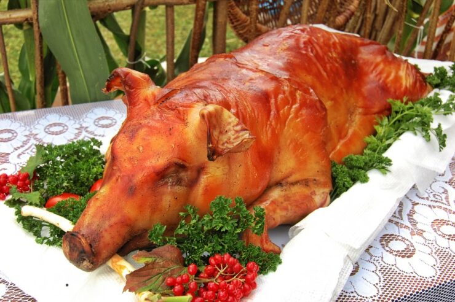

Bandeja paisa ES UNA COMIDAD TRADICIONAL DE LA REGION PAISA DE COLOMBIA, CONTIENE ARROZ BLANCO,
FLIJOLES ROJOS,
CARNE MOLIDAD o PICADA, PLATANO,
CHOROZO, MAIZ, CHICHARON DE CERDO,HUEVO FRITO,
AREPA y UN AGUACATE.
LECHONA

La lechona ES UNA MEZCLA DE GARBANZOS, CARNE DE CERDO, ESPECIAS, y OCASIONALMENTE ARROZ.
(DEPENDIENDO DE LA ZANA)SE SUELE SERVIR CON UNA AREPA
Mientras que Lechona se puede encontrar en restaurantes en toda Colombia,
ES ORININARIO DE LA REGION DE TOLIMA ,
que está al suroeste de Bogotá y contiene las principales ciudades de Ibagué y Espinal.
AJIACO
Originaria DE LA REGION DE BOGOTA y LA CORDILLERA DE LOS ANDES DE COLOMBIA, UNA SOPA BLANCA CON POLLO y UNA VARIEDAD DE DOS O TRES TIPOS DE PAPAS,
MAI,CREMA AGRIA
SANCOCHO
El sancocho proviene del plato tradicional español y es popular en toda América del Sur, y cada país tiene una visión única del plato.
Colombia no es diferente: EL PLATO COLOMBIANO VARIAN ENTRE EL PESCADO DE LA COSTA Y LOS DIFERENTES TIPOS DE CARNE DE OTRAS REGIONES. CONTIENE YUCA, MAIZ, PAPAS Y PLATANO, Y POR LO GENERAL SE SIRVE CON ARROZ BLANCO.
© 2025 sabor colombiano